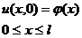

Постановка задачи
Решить краевую задачу для заданного уравнения методом сеток и реализовать его как систему программных единиц в СКМ MatLab.
Заданное уравнение:

Граничные условия:

Начальные условия:

Выполнение работы предусматривает:
- Выбор способа аппроксимации уравнения и граничных условий с учетом устойчивости получающейся разностной схемы.
- Запись уравнений разностной схемы с учетом выбранной аппроксимации.
- Определение способа решения систем разностных уравнений, с учетом их особенностей.
- Определение входных и выходных данных задачи на каждом этапе расчета.
- Реализация выбранного способа решения системы разностных уравнений с учетом выбранных входных и выходных данных, как систем программных единиц СКМ MatLab.
- Тестирование и отладка соответствующих программных единиц.